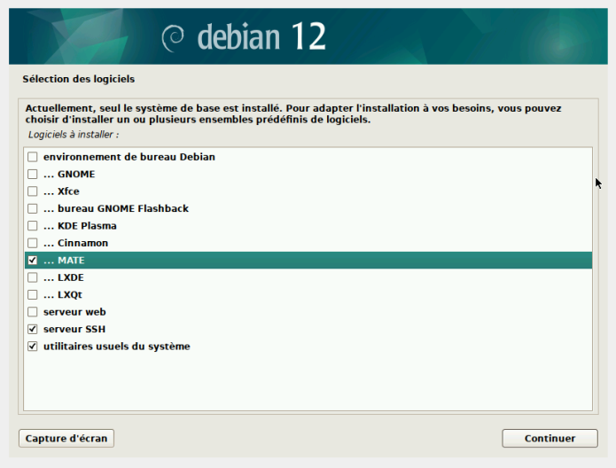
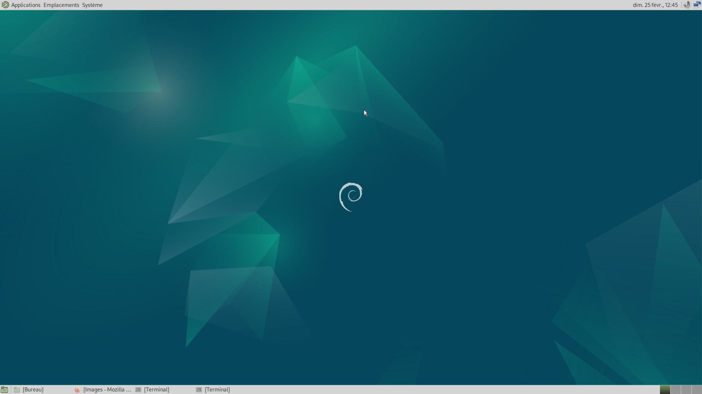

Rapport SAE 2.03 / Installation de Services
Réseaux
Alexandre LEGRAND
Ylies ERTAM
Vincent JACQUEMELLE
1 Installation d’une Machine
Virtuelle
1.1 Introduction
La création et l’installation d’une machine virtuelle (VM) permettent
d’exécuter un système d’exploitation supplémentaire sur une machine
hôte. Ce rapport détaille le processus d’installation d’une machine
virtuelle à l’aide de VirtualBox avant de parler du processus
d’auto-installation.
1.1.1 Prérequis
Avant de commencer, assurez-vous que votre système dispose des
éléments suivants :
Image ISO du système d’exploitation : Obtenez
l’image ISO du système d’exploitation que vous souhaitez installer sur
la machine virtuelle.
1.2 Étapes d’installation
1.2.1 Création d’une Machine
Virtuelle
Lancez VirtualBox après l’installation.
Cliquez sur “Nouvelle” pour créer une nouvelle machine
virtuelle.
Suivez l’assistant de création de machine virtuelle en
fournissant un nom, un type et une version de système
d’exploitation.
Allouez 2 Go de RAM pour la machine virtuelle.
Créez un disque dur virtuel et allouez 20 Go d’espace de
stockage.
1.2.2 Configuration de l’Image
ISO
Dans les paramètres de la machine virtuelle, accédez à la section
“Stockage”.
Sous le contrôleur IDE, ajoutez un périphérique de stockage
optique.
Sélectionnez l’image ISO du système d’exploitation que vous avez
téléchargée, ici nous avons télécharger une image ISO de Debian 12
disponible sur le site Debian.
1.2.3 Installation du Système
d’Exploitation
Démarrez la machine virtuelle.
Suivez les instructions du programme d’installation du système
d’exploitation.

Instructions
Sélectionnez le disque virtuel que vous avez créé comme
emplacement d’installation.
Complétez le processus d’installation en suivant les étapes
fournies par le système d’exploitation.
1.2.4 Conclusion
La machine virtuelle a enfin été installée, maintenant nous allons
l’installer de façon automatique, c’est-à dire en automatisant nos
réponses.
2 Installation d’une machine
virtuelle automatisée
2.1 Introduction
Maintenant nous allons passer à l’installation automatisée d’une
machine virtuelle, grâce au script AUTOINSTALL_DEBIAN.zip
fourni.
2.2 Étapes d’installation
2.2.1 Préparation
Premièrement il a fallu aller chercher le script d’installation
automatisée sur Moodle.
Puis il faut insérer le script dans l’espace du disque
optique.
Maintenant il suffit de lancer la machine virtuelle jusqu’au
démarrage de la machine.
Une fois démarré, nous arrivons sur un terminal car aucune
interface graphique n’a été installée.
Pour installer une interface graphique grâce au script, nous
avons rajouté mate-desktop à la suite de la commande
tasksel dans le preseed.cfg :
tasksel tasksel/first multiselect standard ssh-server, mate-desktop

Environnement MATE
Ensuite on peut relancer la machine et l’installation de base est
terminée.
2.2.2 Différents ajouts
demandés
Nous avons dû ajouter les droits sudo à
l’utilisateur user, pour cela nous avons ajouté dans le fichier
vboxpostinstall.sh la commande suivante :
log_command_in_target usermod -aG sudo "user"
Bien évidemment, nous avons dû automatiser l’installation des
différents paquets dans le preseed-fr.cfg:
Les 2 premières commandes servent à identifier la personne, la
machine qui fait les ajouts sur le dépôt git.
Quant à la dernière ligne, celle-ci permet à chaque initialisation de
dépôt git le nom de celui-ci par le mot entre guillemet, ici master.
3.1.2 Installation d’autres
paquets
Nous devons installer les paquets suivants :
Paquets
Commande
Explication
gitk
sudo apt-get install gitk
Gitk est une interface graphique pour Git qui
permet de visualiser l’historique des commits, les branches et les
différences entre les versions dans un environnement graphique
git-gui
sudo apt-get install git-gui
git-gui est aussi une interface graphique pour Git
qui permet de visualiser les commits ou d’initialiser un dépôt. Nous
pouvons le lancer sans dépôt existant via la commande
git-gui & pour le lancer en tâche de fond
3.1.3 Installation d’une interface
graphique Git de notre choix
Nous avons choisi d’installer Sublime Merge, afin de
l’installer nous avons suivi les étapes d’installation présentes sur leur
page
-wget-qO- https://download.sublimetext.com/sublimehq-pub.gpg |gpg--dearmor|sudo tee /etc/apt/trusted.gpg.d/sublimehq-archive.gpg > /dev/null-sudo apt-get install apt-transport-https-echo"deb https://download.sublimetext.com/ apt/stable/"|sudo tee /etc/apt/sources.list.d/sublime-text.list-sudo apt-get update-sudo apt-get install sublime-merge
4 Gitea
Nous allons maintenant aborder l’installation de Gitea.
4.1 Installation
4.1.1 Télécharger le paquet
Pour commencer nous allons télécharger le paquet avec la commande
suivante :
Maintenant il faut définir le répertoire dans lequel Gitea va
travailler :
-export GITEA_WORK_DIR=/var/lib/gitea/
4.1.6 Déplacer le fichier binaire
au bon endroit
-cp gitea /usr/local/bin/gitea
4.1.7 Auto-complétion bash/zsh
Pour l’auto-complétion bash, un script est présent sur
cette
page qui pourra être copié dans un fichier dont le chemin est :
/usr/share/bash-completion/completions/gitea
Pour l’auto-complétion zsh, un autre script est présent
sur cette
page qui pourra être copier dans un fichier dont le chemin est :
/usr/share/zsh/_gitea
4.2 Démarrer Gitea
Nous créeons un service Linux afin de démarrer Gitea automatiquement
:
-sudo systemctl enable gitea --now
Pour démarrer Gitea avec une ligne de commande, nous pouvons inscrire
celle-ci dans le terminal MATE :
-GITEA_WORK_DIR=/var/lib/gitea/ /usr/local/bin/gitea web -c /etc/gitea/app.ini
4.3 Plus d’informations
Pour plus de renseignements, la page de la documentation complète en
anglais de Gitea est consultable juste ici : Doc Gitea
Un serveur web est un logiciel qui permet de traiter les requêtes
http pour afficher des pages html.
Qu’est-ce qu’un serveur ssh ?
Un serveur ssh est un logiciel qui permet de l’accès sécurisé à un
système distant ou à une machine via le
protocole ssh.
Qu’est-ce qu’un serveur mandataire ?
Un
serveur mandataire ou un proxy, est un serveur intermédiaire qui
agit comme un intermédiaire entre les utilisateurs et les serveurs
auxquels ils accèdent. Il reçoit les requêtes du navigateur pour
récupérer les pages Web demandées avec leurs éléments afin de décider
s’il doit vous les transmettre ou non (selon les règles du pays par
exemple).
Quelle est la version du noyau Linux utilisé par votre VM
?
En tapant la commande uname -a dans la machine virtuel nous obtenons
le noyau suivant: 6.5.0-18 generic.
À quoi servent les suppléments invités ? Donner 2 principales
raisons de les installer ?
Ils permettent une meilleure intégration du bureau et des meilleures
performances graphiques par exemple.
À quoi sert la commande mount (dans notre cas de figure et
dans le cas général) ?
Elle permet de rendre accessible un système de fichier à partir d’un
emplacement particulier dans l’arborescence de fichier.
Qu’est ce que le projet Debian ? D’où vient le nom Debian
?
Il existe 3 durées de prise en charge (support) de ces
versions : la durée minimale, la durée en support long terme (LTS) et la
durée en support long terme étendue (ELTS). Quelles sont les durées de
ces prises en charge ?
La version Stable : Il s’agit de la version principale de Debian,
elle est stable et fiable, les mise à jours de celle-ci se poursuivront
5 ans après sa sortie.
La version Testing : Testing est une version intermédiaire qui
contient des packages plus récents que la branche Stable. Cependant elle
est beaucoup moins stable que la version Stable. Une fois les mise à
jour de la version testing sont arrivées à échéance elle devient alors
la version Stable.
La version Unstable : C’est la version de développement de Debian.
Elle bénéficie des dernières versions des logiciels mais elle ne
deviendra jamais la version stable.
Pendant combien de temps les mises à jour de sécurité
seront-elles fournies ?
Les mises à jour de sécurité sont disponibles 5 ans après la dernière
version de la version
Stable.
Combien de versions au minimum sont activement maintenues par
Debian ? Donnez leur nom générique (= les types de distribution)
?
La version stable, la version odlstable et la version testing sont
les 3 versions maintenues par Debian comme on peut le voir sur la page des
releases Debian.
Chaque distribution majeure possède un nom de code différent.
Par exemple, la version majeure actuelle (Debian 12) se nomme bookworm.
D’où viennent les noms de code données aux distributions ?
Lors de la création d’une machine virtuelle, à la première page, il
faut cocher une case car le fichier ISO possède une version déjà
configurée par défaut et ne propose pas de modifier cette installation
par défaut.
4.5 Problèmes durant l’installation
automatisé :
Difficultés à trouver l’endroit pour installer l’environnement mate,
nous avons essayé avec la commande
log_command_in_target apt-get install mate-desktop dans le
vboxpostinstall.sh mais ça ne fonctionnait pas. Nous avons
ensuite trouvé un forum expliquant qu’il fallait l’inscrire dans le
preseed-fr.cfg avec la commande
tasksel tasksel/first mate-desktop. Nous avons ensuite fait
le lien entre cette commande et la commande déjà présente
tasksel tasksel/first multiselect standard ssh-server.
4.6 Problèmes durant l’installation
et la mise en service de Gitea :
Nous avons eu des difficultés à comprendre ce que faisaient les
commandes présentes sur le site de Gitea pour l’installation. Par
exemple, nous n’avions pas compris que ces commandes créaient un
utilisateur Git.
Vous pouvez par exemple utiliser la
commande git –version↩︎